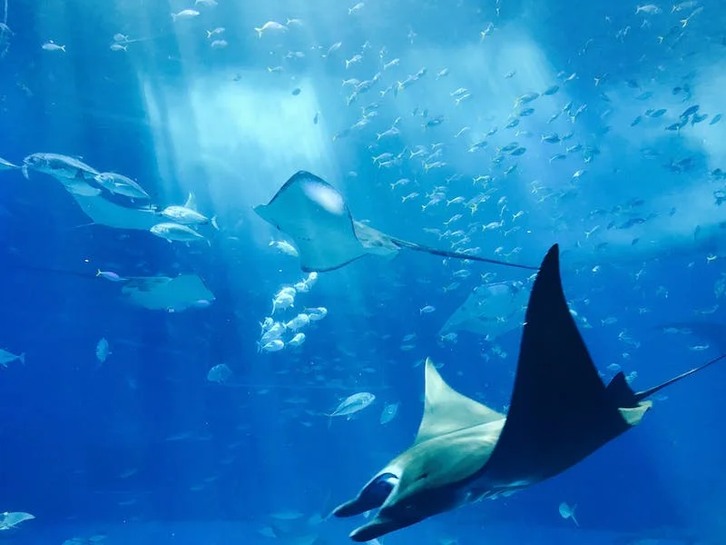

While stingrays don’t normally harm humans, they do hold all the power to. Stingrays generally spend their time buried under the sand. This gives easy access to being stepped on, normally unintentionally. Their spinal blades are commonly heard as either barb or stingers. The barb blades consist of cartilage and when threatened the stingers may puncture humans, which can be fatal depending on the location. In addition to the wound, they release complex venom that will cause severe pain. The most dangerous stingray is blue-spotted because of their venom but death is still extremely rare.
.jpg)
While stingrays live in all, temperate, coastal, and subtropical waters, they are at risk of endangerment. There are around 500 species of stingrays, and each one plays a part in keeping oceanic food chains flowing. They normally aren’t shy around humans depending on the location. The most commonly spotted is the Dasyatis, also referred to as the “rough rays”. This is also one of the first families of stingrays that was ever recorded by science. There are eight stingray families, such as Hexatrygonidas, Plesiobatidae, Urolophidae, Urotrygonidae, Dasyatidae, Potamotrygonidae, Gymnuridae, and Myliobatidae.
© 2024 Stingrays